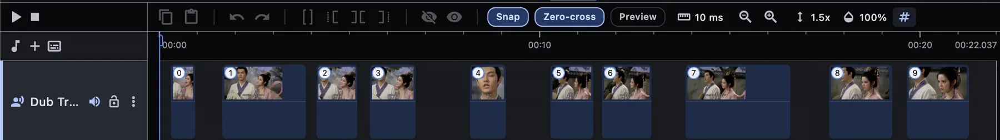
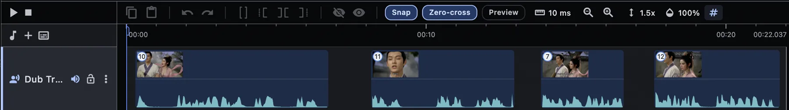
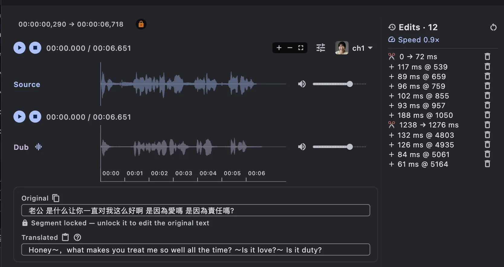
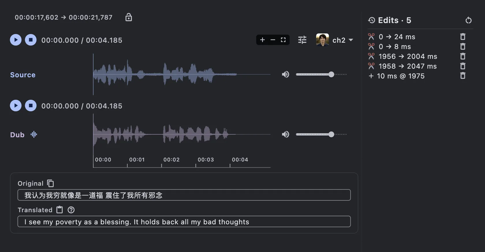

成品
同一段素材的两个状态：原片，和换成英文配音的成片。
页面上的视频按网页加载做了压缩，分辨率与成片一致（1280 × 720）。
配音不是把原声整条盖掉：先把原声拆成人声和背景声，再只替换人声 —— 见第 2 步。
制作过程
六步：先整理 AI 分出来的段落，再分离人声、改译文、配音对齐波纹、做字幕，最后导出。
1
整理分段
识别的分段受语速和背景声影响，会长短不一。用裁剪与合并整理成完整台词，不改动时间点。
2
人声分离
把原声拆成人声轨和背景声轨；配音只替换人声，背景与音效留着。
3
校对译文
按口型改写译文：短句、缩略形式、能在同样的时长里念完，比逐字直译更重要。
4
配音对齐波纹
整段配音后，用语速、删除静音、插入静音，让配音波形尽量贴合原声波形。
5
克隆字幕轨
从配音轨复制一条字幕轨，再按语义重新分段，让每行字幕长度均匀。
6
导出成片
导出窗口里选「字幕轨道」，把双语字幕烧录进视频。
1 · 整理分段：把碎句拼回完整的台词
AI 分析的分段是按语音切的：说得快、句子短，就会切得很碎；背景里有人声或音效，又可能几句话并成一段。 所以第一步不是配音，而是把段落整理成「一段 = 一句完整的话」。
- 碎句合并：像「老公」「是因爲愛嗎」「是因爲責任嗎」这种各自成段的，合并回一句。
- 多余部分裁掉：段首段尾的空白、气口，用裁剪去掉，别让它占着台词的时间。
- 时间点是准的：分段的起止来自识别，和画面对得上；整段平移会让口型错位， 所以只在原边界上切、并，不要拖动分段。
- 先解锁：分段默认是锁定的（轨道左侧的锁图标）；要裁剪、分割、合并或移动，先解锁。




2 · 人声分离：留下背景，只换人声
直接盖一条配音上去，环境声、配乐、音效会一起消失，成片听着就像在录音棚里念稿。 先在原声轨上执行人声分离，把它拆成两条：一条人声、一条背景声。配音只替换人声，背景声轨留着参与最后的混音。
后面还用得上：分离出来的人声轨可以静音，用来对照口型；背景声轨在导出时保留，成片才有现场感。
3 · 校对译文：先能念出来，才谈得上对口型
字幕的译文只要读着顺；配音的译文还得念得完、合得上嘴。同一句话，英文往往比中文长， 所以这里的目标不是逐字对应，而是在原句的长度里把意思说清楚：拆成短句、用缩略形式、把书面语改口语。
本例的 4 句台词最终是这样改的（中文原句 → 英文配音台词）：
| # | 中文原句 | 英文配音台词 |
|---|---|---|
| 1 | 老公，是什么让你一直对我这么好啊？是因为爱吗？是因为责任吗？ | Honey~, what makes you treat me so well all the time? ~Is it love?~ Is it duty? |
| 2 | 是因為窮，我要是有钱，我也不是啥好东西 | 'Cause I'm poor. If I had money, I'd be no good either. |
| 3 | 我这点定力全靠贫穷给我守着 | All myself control, poverty keeps it for me |
| 4 | 我认为我穷就像是一道福，震住了我所有邪念 | I see my poverty as a blessing. It holds back all my bad thoughts |
对照文档只是示例：不同的片子、人物关系和语气，台词要按场景重写，不要照抄句式。
查看与 DeepSeek 的翻译过程记录（中文版）
配音脚本对照文档
用途：本文件提供为对口型配音改编的英文配音脚本。通过使用短句和自然节奏，尽可能贴近中文原文，以确保译文符合配音要求，并保持口型一致。
第 1 句
中文原文：老公，是什么让你一直对我这么好啊？是因为爱吗？是因为责任吗？
英文配音台词：Honey, what makes you treat me so well all the time? Is it love? Is it duty?
口型说明：“Honey”对应“老公”；中间较长短语对应“是什么让你一直对我这么好啊”的连续口型；“Is it love?”和“Is it duty?”短促干净，对应两个问句结尾。
备选（更贴近原句结构，稍长）：Honey, what makes you always be so good to me? Is it because of love? Is it because of duty?
第 2 句
中文原文：是因為窮 我要是有钱 我也不是啥好东西
英文配音台词：'Cause I'm poor. If I had money, I'd be no good either.
口型说明：“'Cause I'm poor”短促，对应“是因為窮”；“If I had money”对应“我要是有钱”；“I'd be no good either”比“I wouldn't be a good person either”更短、更干净，便于对口型。
备选（语速较慢、口型较长）：It's because I'm poor. If I were rich, I'd be no good either.
第 3 句
中文原文：我这点定力全靠贫穷给我守着
英文配音台词：All my self-control — poverty keeps it for me.
口型说明：“All my self-control”对应“我这点定力”；“poverty keeps it for me”节奏连续，结尾“for me”可对上“守着”的收口。
备选（口型较长）：Whatever self-control I have, poverty is what keeps it for me.
第 4 句
中文原文：我认为我穷就像是一道福 震住了我所有邪念
英文配音台词：I see my poverty as a blessing. It holds back all my bad thoughts.
口型说明：“I see my poverty as a blessing”对应“我认为我穷就像是一道福”，其中“blessing”落在“一道福”上；“It holds back all my bad thoughts”短促连续，结尾“bad thoughts”收口干净，对应“邪念”。
备选（语速较慢、口型较长）：I think my poverty is a blessing — it keeps all my evil thoughts in check.
配音通用说明
1. 优先使用短句，避免复杂长句，便于对口型。
2. 使用“I'm”“I'd”“'Cause”等缩略形式，使节奏自然、口型紧凑。
3. 每句给出两个版本时，通常第一版更适合干净对口型；备选版适合语速较慢或画面口型较长的情况。
4. 译文尽量贴近中文原意，但在直译过长、不利于配音时做了调整。
4 · 配音并对齐波纹：让配音跟着原声的节奏走
整段配音出来以后，再看它和原声的波形差多少。差得不多，调语速；中间多出来的空白，删除静音； 不够长的地方，插入静音。目标不是「一模一样」，而是每一句的起伏、停顿和原声对得上 —— 播放时口型才不飘。
- 音量：尽量保证音色和感情，可能要调几次才满意。
- 语速：整句的粗调，第一句用了 0.9×，第二句 0.95×，第三、四句保持 1.0×。
- 删除静音：去掉句中多余的空白，让后半句往前赶。
- 插入静音：补出原声里本来就有的停顿，让配音别抢拍。
下面四张是每一句配音完成后的对比：上面是原声，下面是配音，右侧是这一句做过的编辑。




5 · 克隆字幕轨：从配音轨复制一条，再重新分段
配音轨上的 4 段是「台词」级的分段，一段 2–6 秒，直接当字幕会一行太长。点配音轨道头的「⋯」（更多操作），选 「克隆字幕」，得到一条只用于显示的字幕轨，再按语义把它切成更均匀的 7 段。
字幕轨只决定画面上的字，不影响已经配好的声音；改字幕分段不需要重新配音。
6 · 导出成片：字幕来源选字幕轨道
导出窗口里，输出类型选「视频」，在「字幕来源轨道」里选刚做好的字幕轨道（不是配音轨道）；双语顺序按需要调， 需要单独的字幕文件时，同一窗口也能导出 SRT / ASS。
容易选错的地方：选配音轨道，烧进视频的会是 4 段长台词；选字幕轨道，才是刚刚分好的 7 行。
配音怎么对齐
顺序很重要：先把台词改到能念完，再调语速，最后才动静音。
- 先改台词：句子太长、书面语太多，怎么调语速都会赶或者拖。
- 语速是粗调：0.9×–1.0× 之间微调，别用它硬塞长句，音色会变。
- 删除静音：句中多余的空白，删掉后整句更跟得上原声。
- 插入静音：原声里有停顿、配音抢拍，就补一小段静音。
- 每句单独听：看着波形对、听着不对，还是要以耳朵为准；最后整段连起来再听一遍。
- 别动分段边界：对齐是在配音轨内部完成的，分段的时间点保持不动。
一个够用的标准：同一个画面，原声和配音的波形起落大致重合；播放时不觉得声音比画面快或慢半拍。
查看配音操作说明（项目里的原始笔记）
配音：
1、尽量保证配音后的音色和感情，这个可能需要调整多次达到比较好的配音效果；
2、尽量保证配音后的波纹和原声波纹一致；删除配音后静音数据和插入静音数据是两个不错的操作。
可复用场景
只要有「原声」和「画面」，这套流程都能用：换语言，但保留表演和背景。
短剧 / 影视二创
口播与访谈
课程与讲座
产品演示
跨境电商
广告与宣传片
纪录片片段
一条通用规律：分段决定「一句话有多长」，译文决定「这句话能不能念完」，
波纹对齐决定「听起来是不是同一个人在说」。三步顺序别倒过来。